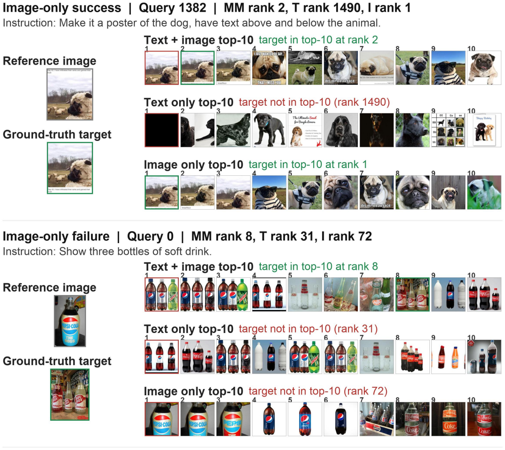
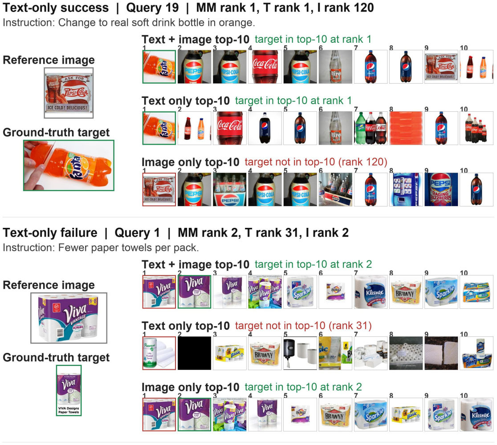
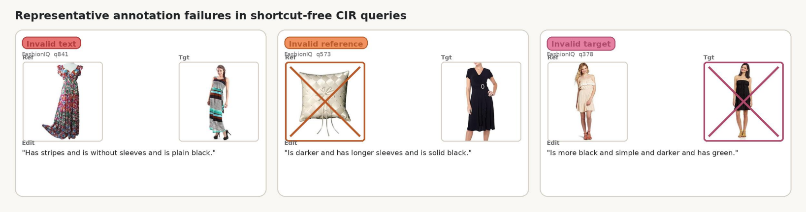

TL;DR. Composed Image Retrieval is supposed to require both a reference image and a modification text. Across the four standard CIR benchmarks — CIRR, FashionIQ, LaSCo, and CIRCO — we audit 11 retrievers (9 open-source + 2 commercial APIs) and find that a large share of test queries can be solved with only the image or only the text. CIRCUS releases the audit, the cleaned shortcut-free queries, and a human-validated subset of 1 689 queries that survived both filters.
By the numbers
What does a shortcut look like?
Two qualitative galleries from CIRR. Left: the retriever ignores the text and still finds the target from the reference image alone. Right: the retriever ignores the image and still finds the target from the modification text alone. Either of these makes the “composed” task degenerate.


How CIRCUS works
- Encode each query three times for every retriever in the pool: with both modalities (the standard CIR setting), with only the text (image zeroed out), and with only the image (text dropped).
- Record the rank of the ground-truth target under each modality.
- Aggregate across the 11-retriever pool and assign each query a label:
composition_required— at least one retriever solves it with both modalities; none solves it unimodally.unresolved— no retriever solves it under any modality.shortcut_solvable— at least one retriever solves it with only image or only text. Excluded.shortcut_free— the union of the first two (kept).
- Validate by humans: re-show the surviving queries to multiple annotators using the four-category rubric below. Queries kept only when a majority of annotators marked them as well-formed CIR.
Validity rubric (used during human validation)

VALIDATED, INVALID_TEXT_QUERY, INVALID_IMAGE_QUERY, INVALID_TARGET_IMAGE (plus QUERY_TOO_BROAD).
annotations/annotation_instructions.md.Inter-annotator agreement


The full write-up — including Krippendorff's α — is in annotations/agreement_report.md.
Shortcut audit (Table 1)
Per-benchmark split sizes after running the audit across all 11 retrievers at K = 10.
| Benchmark | Total | composition required | unresolved | shortcut-free | shortcut-solvable |
|---|---|---|---|---|---|
| CIRR | 4 170 | 271 | 414 | 685 | 3 485 |
| FashionIQ | 6 003 | 1 462 | 2 607 | 4 069 | 1 934 |
| LaSCo | 30 031 | 2 064 | 16 354 | 18 418 | 11 613 |
| CIRCO | 220 | 53 | 3 | 56 | 164 |
Human-validated subset (Table 2)
For CIRR and CIRCO the full shortcut-free residue was audited; for FashionIQ and LaSCo a stratified sample of 1 000 + 1 000 was audited.
| Benchmark | audited (comp_req) | validated_solved | audited (unresolved) | validated_unsolved | total validated |
|---|---|---|---|---|---|
| CIRR | 271 | 147 | 414 | 156 | 303 |
| FashionIQ | 1 000 | 368 | 1 000 | 218 | 586 |
| LaSCo | 1 000 | 452 | 1 000 | 306 | 758 |
| CIRCO | 53 | 39 | 3 | 3 | 42 |
| Total | 2 324 | 1 006 | 2 417 | 683 | 1 689 |
Headline metric — Recall@10 and the Composition Gap
The headline metric is Recall@10. When the same retriever is also evaluated under the two unimodal ablations (image-only zero-image and text-only drop-text), we report the Composition Gap:
Composition Gap = R@10(multimodal) − max( R@10(text-only), R@10(image-only) )A small Composition Gap means the retriever does not actually benefit from seeing both modalities — either the model is not composing, or the benchmark does not require composition. CIRCUS lets you measure both, on cleaner subsets.
Retriever pool
9 open-source + 2 commercial APIs:
- E5-Omni, GME-Qwen2VL, LamRA, LamRA-Qwen2.5VL, MM-Embed
- Qwen3-VL-Embedding (2B and 8B), Rzen-Embed, VLM2Vec-V2
- Gemini Embedding 2, Voyage Multimodal 3.5
Reproduce in five stages
- Envs — one conda env per retriever family (
envs/create_*.sh). - Per-(dataset, retriever) retrieval —
retrieval/run_generate_retrieval_data*.shwrites one JSON per pair with multimodal / text-only / image-only ranks. - Aggregate —
retrieval/aggregate_retrieval_data.pyturns ranks into the shortcut-audit labels (already shipped undershortcut_audit/). - Validated subset —
final_dataset/build_validated_subsets.pyderivesfinal_dataset/query_jsonl/fromannotations/users/. - Re-evaluation —
subset_evaluation/run_subset_eval.shwrites Recall@10 (and the two ablations, when requested) per(dataset, subset, retriever)tosubset_evaluation/logs/results.jsonl.
Full step-by-step instructions are in the repository README.
Citation
@inproceedings{circus,
title = {Do Composed Image Retrieval Benchmarks Require Multimodal Composition?},
author = {Attimonelli, Matteo and <co-authors>},
year = {<year>},
note = {<venue / arXiv ID>},
}